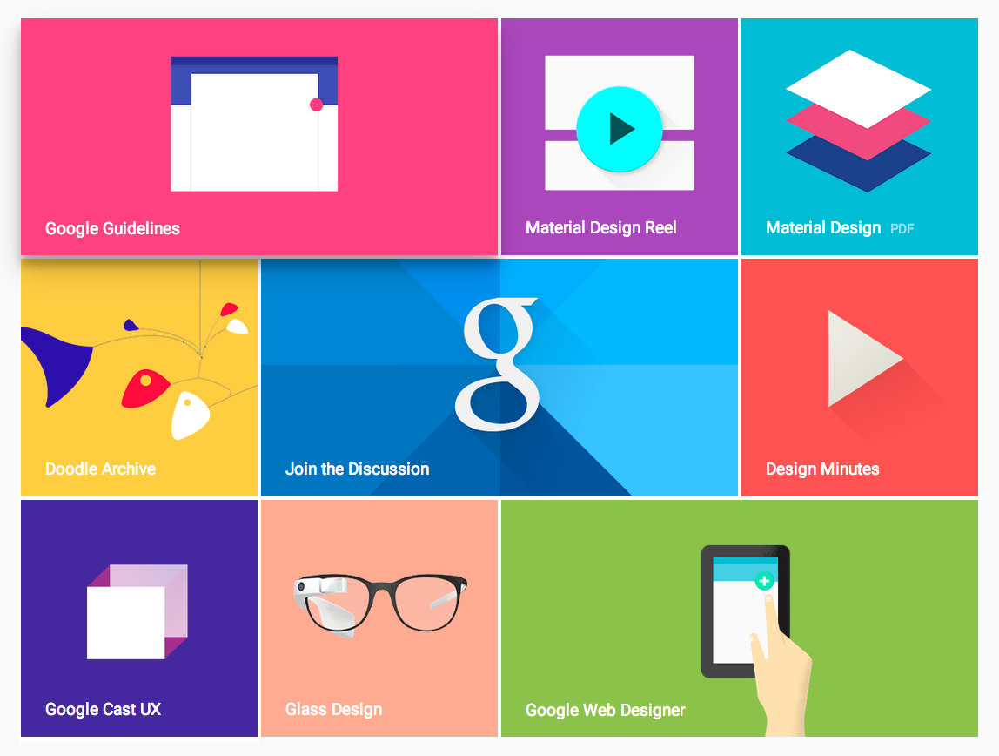

Realism: conclusions
Drawing inspiration from comics and Scott McCloud's theories of iconic representation, it appears that instead of aiming for either peak of the uncanny valley graph, designers would do best to create an icon that resonates with the user, regardless of its level of realistic depiction. This chapter also identifies a trend toward lo-fi design in high tech, pointing to design frameworks like minimalism, material design, and flat design as solutions for the problem of realism.
